Claude Code 可以說是引領這波 AI 應用潮流的殺手級應用產品，其架構設計與可用性被公認是最前沿的 AI 應用工程技術，是 Anthropic 廣為人知的一項產品，其原作者與開發負責人 Boris Cherny 也因此聲名大噪。但是 Claude Code 本身是不開源的，就在 2026 年 3 月 31 日，由於 source map 沒清乾淨，Claude Code 在 v2.1.88 版本中意外地洩漏了，剛好逢隔天 4/1 愚人節，甚至被當作是一場愚人節驚喜！此次的洩漏事件也讓大家有機會了解這項最前沿的 AI 應用到底是如何被實現出來的，因此大家也非常樂見此次的洩漏事件，當然也不少人因此看笑話，但最重要的還是如何從此次的事件，學習 AI 時代的各種新課題，其中也包括如何在快速迭代的開發過程中，進行更加嚴謹與安全的管控，避免後續諸如此類的事情發生。
蠻值得看的除了 Agent Loop 的實作，還有完整的 Harness Engineering 設計，甚至是一些有趣的機制，都值得拿來參考的~
整起事件的背景
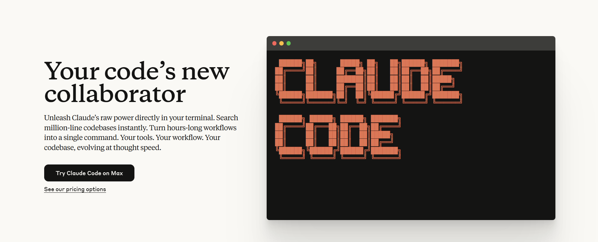
Claude Code 是由 Anthropic 在 2024 年 12 月發布的一款 AI Coding Agent 工具，目的是幫助開發者在終端機中將想法更快地轉化為程式碼，可以搜尋和讀取程式碼、編輯檔案、編寫和執行測試、提交並推送程式碼到 GitHub，以及使用命令列工具等操作。
Claude Code 的最大優勢在於其靈活性和終端原生體驗，不會綁定你到特定的 IDE，而是作為一個 CLI 工具，可以與任何現有的 IDE 配合使用。相比 Cursor、Windsurf 等 AI 編程工具需要完全切換到新的 IDE 環境，Claude Code 讓開發者能保持原有的工作流程，同時在熟悉的終端環境中獲得 AI 協助。
Claude Code 原始碼洩漏 !!!
2026 年 3 月 31 日，安全研究員 Chaofan Shou 在例行巡查 npm 倉庫時，發現 Anthropic 在發布 Claude Code v2.1.88 版本時，錯誤地將一個 source map（.map）檔案打包進了公開發布的 npm 包。
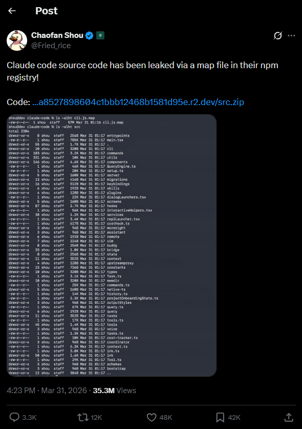
src: https://x.com/Fried_rice/status/2038894956459290963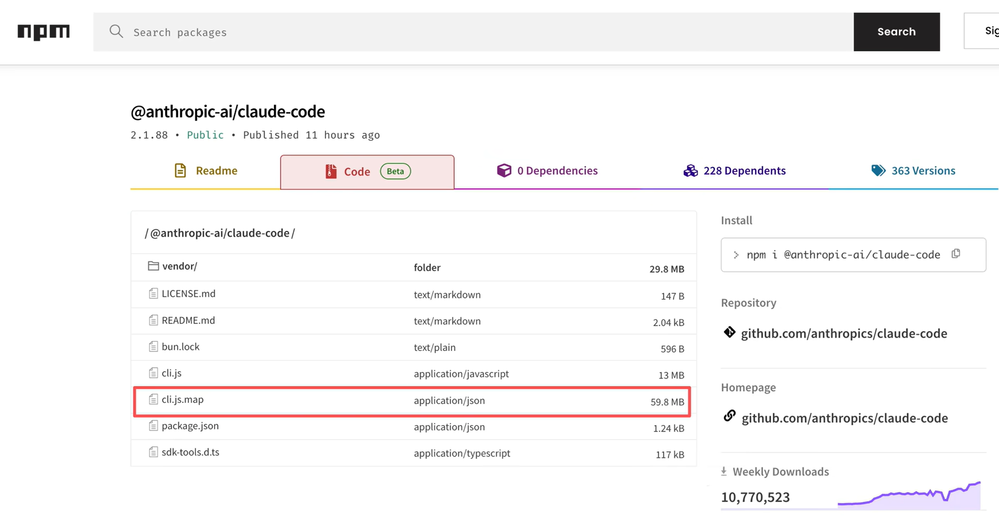
正常情況下，.map 檔案不應該出現在發布到 npm 的生產包裡，需要在 .npmignore 中排除，或在構建配置中關閉 source map 生成。Claude Code 使用 Bun 作為打包工具，而 Bun 打包器預設會生成 source map，除非關閉。
這個檔案約 59.8 MB，有了這個檔案，任何人都可以完整還原出 Claude Code 的全部原始碼。洩漏規模超過 51.2 萬行 TypeScript 程式碼，共計約 1,900 個原始檔案，涵蓋完整程式碼庫，以及大量尚未發布的功能。
幾個小時內，這條推文瀏覽量突破 530 萬，已有其他人將完整原始碼備份至 GitHub。其中最大的備份倉庫，一小時內就衝到 11,300 顆星和 17,300 次 fork。
到 4 月 2 日，Anthropic 針對超過 8,100 個倉庫提交了 DMCA 版權侵權投訴，但封殺令已無法阻止程式碼的蔓延。後來可能因害怕被起訴，原備份者 Sigrid Jin 在極短時間內先將整個龐大的 TypeScript 程式碼全量改寫為 Python，幾小時後又改用 Rust 重構了一遍，讓 Anthropic 的 DMCA 投訴瞬間失效。
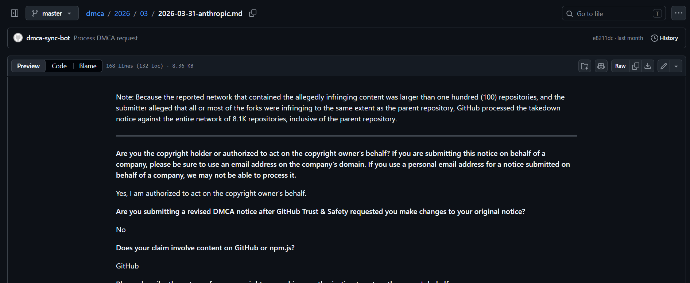
src: github.com/github/dmca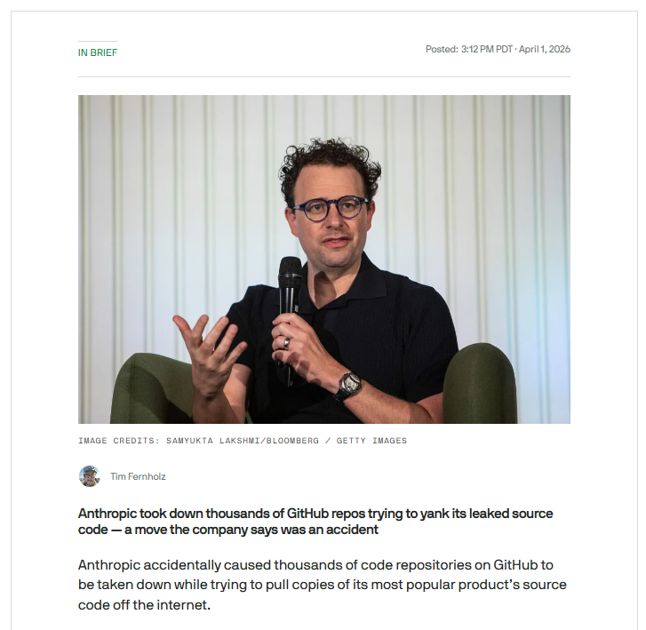
src: TechCrunch實際上這已是 Anthropic 兩年內連續發生的三起事件：
- 2025 年 2 月 24 日：Claude Code 外部首發日，第一次 source map 洩漏。Anthropic 兩小時內撤下。 （Sabrina.dev 深度分析）
- 2026 年 3 月 26 日：CMS 配置錯誤，代號 Capybara 的未發布模型 Claude Mythos 相關草稿外流。 （Fortune 獨家報導）
- 2026 年 3 月 31 日：Claude Code v2.1.88 第二次 source map 洩漏。 （VentureBeat）
始作俑者：npm Source Map
npm（Node Package Manager）是 JavaScript / TypeScript 世界最大的套件註冊中心，開發者會將寫好的函式庫或工具發布上去。Claude Code 就是以 npm 套件的形式發布的，套件名稱叫 @anthropic-ai/claude-code。
現代 JavaScript 程式上線前通常會經過「打包」（bundling）和「壓縮」（minification）：
- 打包把幾百個原始檔合併成一個檔案，減少載入次數
- 壓縮把變數名
userAccountBalance改成a、把空白和註解全刪掉，讓檔案更小
source map 就是一份對照表，一個 .map 副檔名的檔案，記錄壓縮後每個位置對應原始碼的哪一行哪一個變數名。為了能反向還原，幾乎包含完整的原始碼內容，原始的變數名、註解、檔案結構、模組關係全都在裡面。
Claude Code 的事故流程：
- 用 Bun 這個 runtime 打包，Bun 預設會產生 source map
- 沒人在
.npmignore加上.map規則 - 發布到 npm 時
.map檔被一起推上去 - 任何人都能
npm install然後解壓縮看到完整 TypeScript 原始碼
Boris Cherny 後來承認這是「應該早就自動化的手動部署步驟」造成的，而且第一次出事是 2025 年 2 月，13 個月後同樣的洞還沒補——直到第二次出事才補上。
被看光的隱藏機制與架構
- Undercover Mode（隱身模式）：當 Anthropic 員工用 Claude Code 對外部開源專案貢獻時，自動抹除所有 AI 參與痕跡，連「Claude Code」這個字本身都在禁字清單。諷刺的是，他們花這麼大力氣防止 AI 洩漏資訊，結果 build 流程把包含這個模組的完整原始碼一起推上了 npm。
- Memory & Context 三層架構：針對長 session 的 context 退化問題設計的三層記憶系統，索引、知識、歷史各層各司其職，從不全部同時載入，搭配五種漸進式壓縮策略。
- Multi-Agent 編排（Swarms）：內部叫「swarms」的多代理系統，可為可並行任務 spawn 帶有自己工具權限的子代理，分為輕量複製、平行協作、完全隔離三種執行模型。
- KAIROS（未發布的常駐自主代理）：設計成永遠在背景運行的 daemon agent，可自主判斷是否採取行動，並在使用者閒置時自動整合記憶。目前藏在 feature flag 後面尚未上線，但架構已完整建好。
- 終端渲染引擎：外表是 CLI，內裡用遊戲引擎技術做全屏無閃爍渲染，整個介面由 React 元件樹驅動。
- Buddy 寵物系統：程式碼裡藏著一個 Tamagotchi 風格的彩蛋寵物系統，18 種物種、RPG 屬性、1% 閃光機率，rollout 視窗設在 4 月 1–7 日。
- Frustration Detection：用 15 個 regex 短語偵測使用者不滿情緒並觸發 telemetry，是整次洩漏裡社群反應最爆笑的發現。
- Anti-Distillation：三層防蒸餾機制：對 API 請求注入假工具定義污染競品訓練資料、加密簽章封裝工具呼叫間的推理鏈、HTTP 層 DRM 驗證客戶端真偽。
規模數字：
- 51.2 萬行 TypeScript、約 1,900 個檔案
- Query engine 單獨 46,000 行
print.ts5,594 行包含一個 3,167 行的單一函式- 187 個 spinner verbs（loading 動畫循環顯示 187 種不同的動詞）
- 44 個隱藏的 feature flag
產品形態：從 CLI 到雲端
Claude Code 並不是單一的工具，其本身有多種執行與部屬的方式，每一個都有自己的使用情境：
本地運行命令介面（CLI）
最原始也最常見的形態，使用者在自己機器的終端機裡跑 claude 指令。從外表看 Claude Code 就是一個會在終端印字的指令列工具，但其實是個自製的 React 終端渲染器，整個 CLI 用 React 元件樹來管理畫面狀態，包含串流輸出、工具呼叫的展開/折疊、權限提示彈窗、即時編輯介面等。
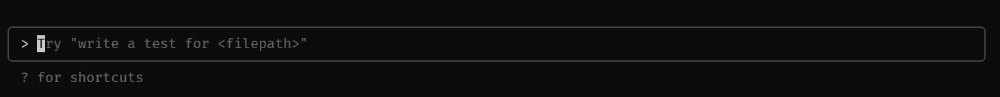
IDE 整合
透過 VS Code 和 JetBrains 的擴充套件嵌入編輯器，透過 WebSocket 跟本地 CLI 行程進行通訊。
Remote Control / Claude Code on the web
讓 Claude Code 在 Anthropic 自己的基礎設施跑，使用者透過瀏覽器或行動裝置遙控。這跟本地版本的信任模型完全不同。
核心架構：Claude Code 的內部構造
背景敘述
打造 AI Agent 核心
在看 Claude Code 本身的機制之前，我們可以先思考一下，一個 LLM Agent 究竟核心是甚麼？又存在什麼工程問題需要解決？
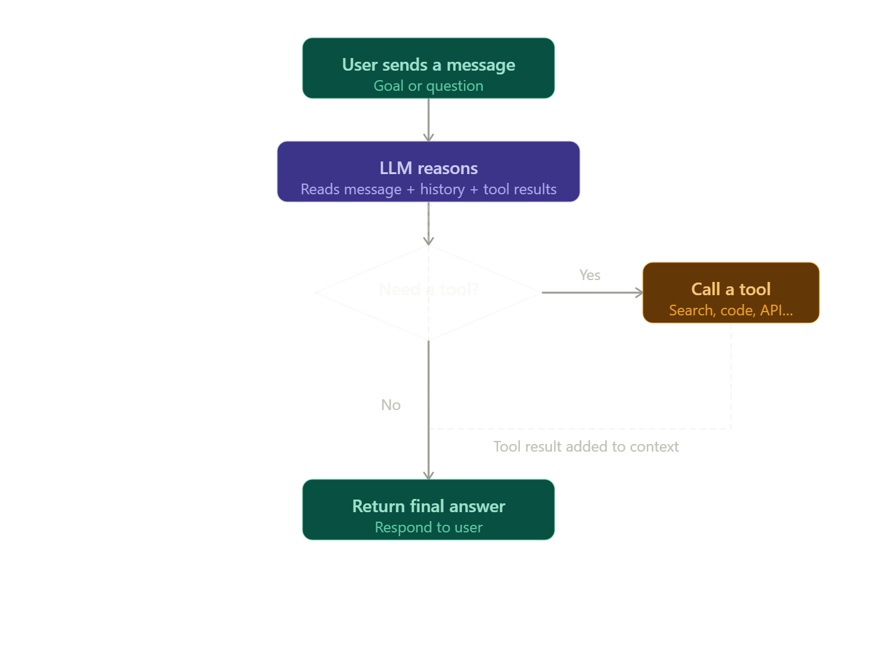
src: arxiv.org/abs/2604.14228while(true) {
for await (msg of callModel())
if (!needsFollowUp)
return {reason: 'completed',...}
runtTools(toolUseBlocks...)
toolResults.push(...)
}Claude Code 的 Query 核心在 src/query.ts
打造 Agent 需要面臨的四大問題：
- 上下文品質問題：context window 有限，對話太長會導致模型遺忘前段內容或品質下降，需要做 context compression 或 summarization
- 歷史紀錄的失憶問題：LLM 本身無狀態，每次 call 都需要重新傳入完整歷史，需要設計 memory 機制
- 安全控制問題：Agent 能執行工具（如 shell、file system），需要有 permission system 和使用者確認機制
- 成本上升問題：每個 loop 都會累積 token，長任務的費用會快速增加，需要 token 管理策略
Harness Engineering
Viv Trivedy 是第一個提出 harness engineering 這個術語的人，他的文章〈Anatomy of an Agent Harness〉被公認為對這個概念最清晰的推導。 （O'Reilly 文章連結）
2026 年，一個新的架構模式出現了，位於所有既有方法之上，叫做 Harness。OpenAI 和 Anthropic 都已正式採用這個術語。
SDKs、Frameworks 和 Scaffolding 三者分別回答的是「你怎麼建造一個 Agent」，而 Harness 回答的是一個完全不同的問題：「Agent 怎麼運行」。Harness 不是前三者的替代，而是位於它們之上的一層。Harness 核心不是 Agent 本身，而是管理 Agent 如何運作的軟體系統，包含六個核心組件：
- Tool Integration Layer：將 model 連接到外部 API、資料庫、code execution 環境
- Memory & State Management：多層記憶體（working context、session state、long-term memory），跨越單一 context window
- Context Engineering：動態管理每次 model call 中出現的資訊
- 權限與安全控制：決定哪些操作需要人工確認
- 錯誤處理與重試：當工具失敗或 model 跑偏時的恢復機制
- 可觀測性：記錄每一輪的執行狀態供 debug 和成本控制
Claude Code 自己的文件直接說明了這一點：「Claude Code serves as the agentic harness around Claude.」 （HuggingFace Agent Glossary）
Claude Code 的系統架構被劃分為五個緊密協作的子系統層次：
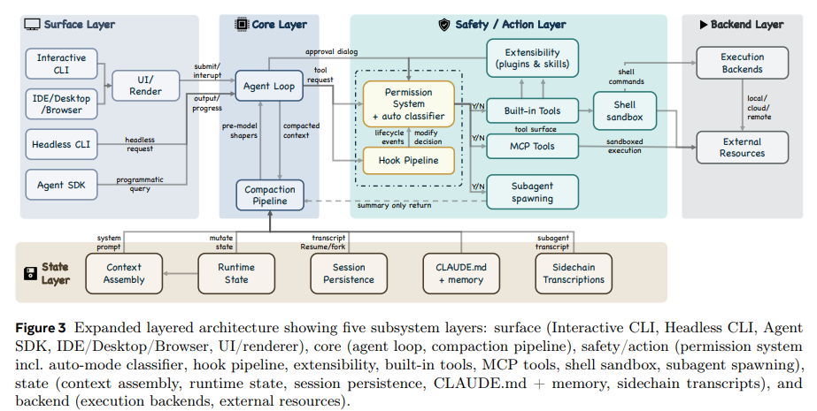
Claude Code 五層系統架構｜src: arxiv.org/abs/2604.14228Query 循環（The Query Loop）
Query 循環是 Claude Code 系統架構中的核心代理循環，本質上是一個帶有狀態管理的 while-true 循環。它被實作為一個位於 query.ts 中的非同步生成器（AsyncGenerator），負責協調整個系統的運作。無論使用者是透過互動式終端機、headless CLI、Agent SDK 還是 IDE 整合介面來操作，最終都會進入這同一個循環。
在設計哲學上，Query 循環採用了 ReAct 模式：由模型負責產生推理與工具呼叫，外圍框架（harness）負責執行實際動作，隨後再將執行結果回饋到下一次的迭代中。
每一次的 Query 循環（單一回合，Turn）都會嚴格遵循以下 9 個執行步驟：
- 設定解析：解析不可變的參數，包括系統提示詞、使用者上下文、權限檢查回呼函式及模型設定檔
- 可變狀態初始化：使用一個單一的
State物件來儲存跨迭代的所有可變狀態 - 上下文組裝：提取從上一次「壓縮邊界」之後的所有對話訊息
- 模型前上下文塑形：在每次呼叫模型之前，執行由 5 個階段組成的上下文壓縮管線
- 模型呼叫：透過非同步串流的方式呼叫 Claude 模型
- 工具分發：若模型的回應中包含了工具呼叫，送往工具編排層（支援併發執行）
- 權限閘門：每一個工具請求都必須通過層層把關的權限系統（deny-first）
- 工具執行與結果收集：工具執行的結果轉換為
tool_result訊息，附加到對話紀錄中 - 停止條件判斷：如果模型回應只包含純文字而沒有新的工具呼叫，該回合宣告完成
四種強制終止條件：
- 達到最大迭代限制（Max turns）：達到系統設定的最大循環次數
- 上下文溢出（Context overflow）：API 拋出
prompt_too_long且自動壓縮失效 - Hook 介入攔截：外部
PostToolUseHook 設定了停止繼續的標記 - 明確中斷：使用者手動觸發中止訊號
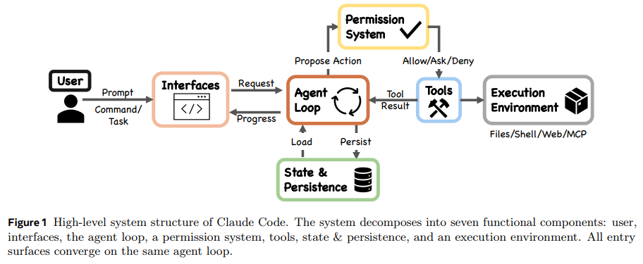
src: arxiv.org/abs/2604.14228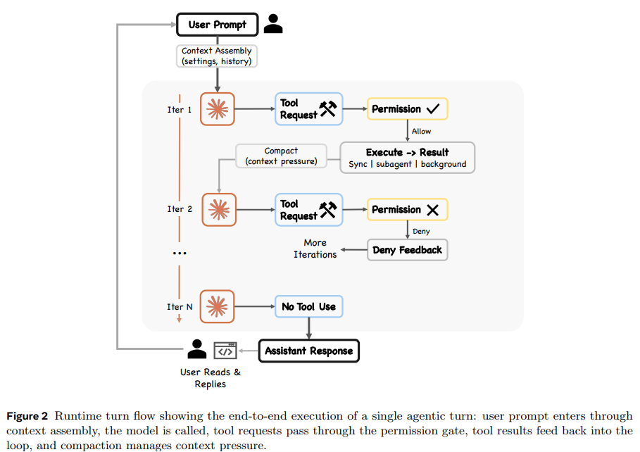
src: arxiv.org/abs/2604.14228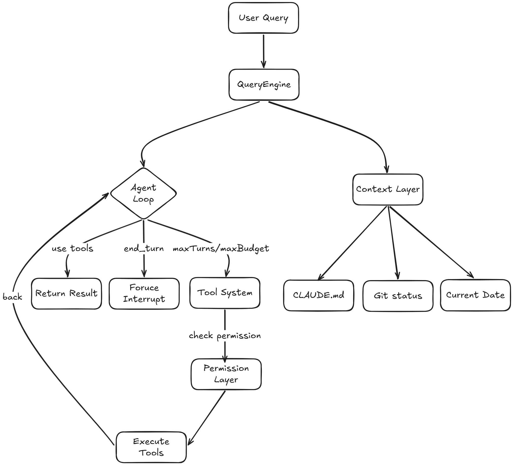
雙重熔斷檢測：maxTurns / maxBudget 透過兩個 max 限制，前者防止輪次過多，後者防止單輪過貴，任一觸發即乾淨結束並回傳對應錯誤碼（error_max_turns / error_max_budget_usd）。
提示詞系統（Prompt）
在 Claude Code 的架構中，提示詞（Prompt）不只是單一的靜態字串，而是一個高度動態、多層次組裝的資源，系統將提示詞視為一種稀缺的瓶頸資源（Binding resource constraint）。
-
系統提示詞（System Prompt）的動態組裝
在每次模型呼叫前，系統組裝完整上下文視窗，包含基礎提示詞、輸出風格（Output styles）、透過
getSystemContext()獲取的環境資訊（如當前 git 狀態）。值得注意的是，使用者的專案配置（如
CLAUDE.md）並不會被放入系統提示詞中，而是作為「使用者上下文」被放置在訊息陣列的最前面。因此模型對CLAUDE.md指令的遵守是「機率性（Probabilistic）」的，真正的強制執行則是依賴確定性的權限規則。 -
使用者提示詞（User Prompt）與歷史紀錄
系統提供了
UserPromptSubmitHook，允許開發者在使用者提交提示詞時注入額外的上下文或阻擋提交。使用者的純提示詞輸入會被獨立儲存在全域的history.jsonl檔案中，支援終端機的「向上鍵」或ctrl+r回溯。 -
子代理（Subagents）的獨立提示詞
使用者可以透過
.claude/agents/*.md來定義自訂的子代理，這些 Markdown 檔案的內文會直接作為該子代理的系統提示詞，YAML 前置資料則定義了它能使用的工具與權限。因為子代理預設不會繼承父層的對話歷史，子代理的呼叫必須依賴高度自給自足（Self-contained）的提示詞。 -
提示詞長度溢出的錯誤恢復
當 API 拋出
prompt_too_long錯誤時，Claude Code 不會直接崩潰，而是會觸發優雅恢復機制：先嘗試「上下文折疊（Context-collapse）」，接著進行「反應式壓縮（Reactive compaction）」。
工具系統（Tools System）
工具系統是代理的「手」，負責將模型的推理轉化為對外部環境的具體操作。工具分為以下幾類：
- 文件工具：Read / Edit / Write / Glob / Grep
- 環境工具：Bash / WebFetch / WebSearch
- 會話工具：AskUserQuestion / Plan Mode / ToDo
- 協作工具：Agent / Task / MCP resource
- MCP：
src\services\mcp
核心架構機制：
- 工具池的動態組裝：系統最多提供 54 個內建工具。其中 19 個永遠包含，另外 35 個根據功能旗標、作業系統環境（如 Windows 下的
PowerShellTool）與使用者權限條件載入。 - 預先過濾機制：
filterToolsByDenyRules()把被權限系統全面拒絕的工具直接從模型的視野中剔除，確保模型不浪費額度嘗試無權使用的工具。 - 延遲載入（Deferred Tool Schemas）：部分工具一開始只會向模型展示「工具名稱」。完整的工具定義只有在模型明確需要並搜尋時才會按需載入。
- 串流分發與併發執行：唯讀操作（如讀取多個檔案）可以平行處理；會修改狀態的操作（如
BashTool）則被強制序列化排隊執行。
權限模式（Permission Mode）
權限模式建立了一個「漸進式信任光譜（Graduated trust spectrum）」，Claude Code 總共設計了 7 種權限模式：
五種常規外部模式（依自主性由低至高）：
plan（計畫模式）：最保守的模式。模型必須先擬定計畫，經使用者批准後才能執行任何動作。default（預設模式）：標準互動式使用情境，絕大多數工具操作需要使用者確認。acceptEdits（接受編輯模式）：針對當前工作目錄內的檔案編輯及特定安全的檔案系統 Shell 指令（mkdir、rm、mv等）自動批准。dontAsk（不詢問模式）：系統不再向使用者跳出詢問提示，但 deny rules 仍被強制執行。bypassPermissions（繞過權限模式）：跳過絕大多數的權限提示，但最關鍵的安全檢查仍持續生效。
條件啟用與內部專用模式：
auto（自動模式）：引入基於機器學習的分類器（ML-based classifier）動態評估請求安全性。bubble（冒泡模式）：內部系統專用，專門用於子代理的權限升級。
狀態管理架構（State Management）
Claude Code 嚴格遵循兩大核心設計原則：「僅限附加的持久化狀態（append-only durable state）」以及「透明的檔案基底配置與記憶」。
- 運行期的可變狀態：使用單一的
State物件儲存跨迭代的所有可變狀態，循環在推進時以替換整個物件的方式來更新狀態。 -
三大持久化儲存通道：
- 會話逐字稿（Session transcripts）：每個專案的單一會話被儲存為
JSONL檔案 - 全域提示詞歷史（Global prompt history）：使用者的純文字提示詞獨立儲存在
history.jsonl - 子代理側鏈紀錄（Subagent sidechains）：每個子代理的對話歷史寫入專屬的
.jsonl與.meta.json檔案
- 會話逐字稿（Session transcripts）：每個專案的單一會話被儲存為
- 僅限附加設計：Claude Code 刻意放棄具備強大查詢能力的資料庫，轉而選擇純文字的 Markdown 與 JSONL 檔案，從不修改或刪除先前寫入的紀錄。
- 安全設計：會話範圍內的權限僅存在於記憶體中，並不會被序列化寫入磁碟，防止恢復舊會話時帶入過高權限。
上下文管理（Context Management）
上下文管理採用「漸進式管理（Progressive management）」與「透明基於檔案的記憶」兩大核心原則。
CLAUDE.md 階層與記憶體架構：
Claude Code 刻意放棄依賴向量資料庫或嵌入檢索的黑箱記憶模式，轉而選擇純文字的 Markdown 檔案。這些指引檔案被劃分為 四個嚴格的優先級階層：
- 管理層（Managed memory）：OS 級別的全局策略（
/etc/claude-code/CLAUDE.md） - 使用者層（User memory）：個人的全局指引（
~/.claude/CLAUDE.md） - 專案層（Project memory）：與程式碼庫一起受版本控制的指引
- 本地層（Local memory）：被 git 忽略的私人專案指引（
CLAUDE.local.md）
目錄越接近當前工作目錄（CWD），其優先級越高。
五層漸進式壓縮管線（Five-Layer Compaction Pipeline）：
- 預算縮減（Budget reduction）：強制限制單一工具結果的長度上限，過長的部分會被替換為內容參照
- 歷史裁剪（Snip）：輕量級地移除較舊的歷史片段
- 微壓縮（Microcompact）：具有快取感知的細粒度壓縮，避免破壞 API 的提示詞快取
- 上下文折疊（Context collapse）：在不更動底層完整對話紀錄的情況下，向模型投影出一個虛擬折疊的對話視圖
- 自動壓縮（Auto-compact）：作為最後手段，呼叫模型對對話進行完整的語意摘要
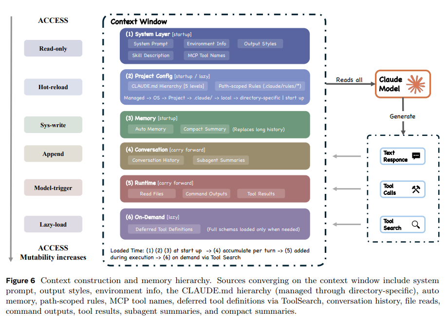
src: arxiv.org/abs/2604.14228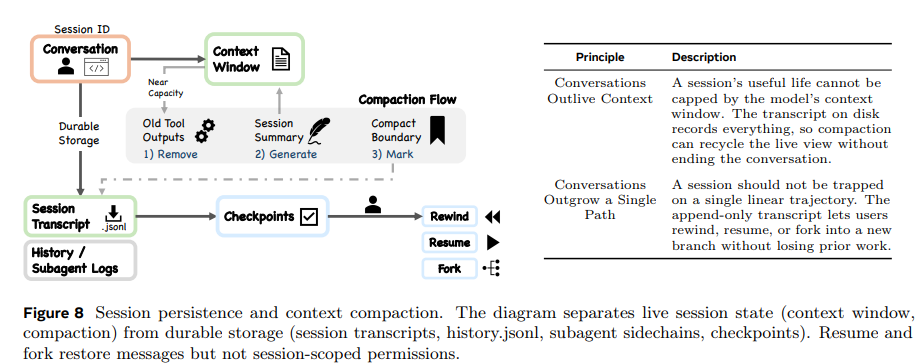
src: arxiv.org/abs/2604.14228Agent / MCP / Skills
代理（Agent）
Agent 是系統中用於處理複雜、多步驟任務的隔離委派機制。它不是在當前的對話視窗中增加工具，而是生成一個全新且隔離的上下文視窗來執行任務。
- 子代理類型：包含內建型（Explore、Plan、通用型、驗證型等），以及透過
.claude/agents/*.md自訂的代理 - 隔離層級：worktree（建立暫時的 Git 工作樹）、remote（內部遠端執行）、預設的 in-process
- 上下文保護：子代理的完整對話歷史只會寫入專屬的側鏈紀錄，只有最終的回應摘要會回傳給父代理
模型上下文協定（MCP）
MCP 是 Claude Code 整合外部服務與工具的主要路徑，賦予模型操作外部環境的能力。在所有擴充機制中，MCP 的上下文成本最高，因為系統必須將 MCP 工具的完整定義放入模型的上下文視窗。支援多種傳輸協定（stdio、SSE、HTTP、WebSocket 等），並採用基於 mcp__server__tool 命名規則的拒絕優先安全把關。
Skills
Skills 是一種低成本注入特定領域知識與指令的機制。定義在 SKILL.md 檔案中，透過 SkillTool 元工具觸發。系統一開始只會向模型展示技能的「名稱與描述」；只有當模型主動決定呼叫 SkillTool 時，該技能的完整指令才會被載入注入到當前的上下文視窗中。這與 MCP 形成對比——MCP 上下文成本高、Skills 上下文成本低。
總結：如何解決四大問題
-
上下文品質問題
五層漸進式壓縮管線（預算縮減 → 歷史裁剪 → 微壓縮 → 上下文折疊 → 自動壓縮）確保 context window 在逼近上限時不是硬截斷，而是有層次地降級處理。
-
歷史紀錄的失憶問題
放棄向量資料庫，改用四層 CLAUDE.md 階層加上 append-only JSONL 逐字稿。記憶是透明的、可人工編輯的、可版本控制的。
-
安全控制問題
七種權限模式建立漸進式信任光譜，搭配 deny-first 最高原則。工具在進入模型視野之前就先過濾，27 個 Hooks 攔截點讓外部介入有固定錨點。模型的能力沒有被限制，被限制的是 harness 讓模型能做什麼。
-
成本上升問題
雙重熔斷（
maxTurns/maxBudget）從輪次和預算兩個維度設硬上限。工具延遲載入節省 context 空間。StreamingToolExecutor 的偷跑機制減少等待時間。子代理隔離確保探索任務不會污染主線程 token 消耗。
補充機制
啟動流程的工程：並行 IO 啟動
Claude Code 的設計哲學強烈傾向於「最小化決策限制，最大化營運框架（Minimal scaffolding, maximal operational harness）」。
- 啟動點與環境初始化：系統的進入點位於
main.tsx的main()函數，它在啟動時會先初始化安全設定（例如防止 Windows PATH 劫持的設定），註冊優雅關閉（graceful shutdown）的訊號處理器，接著才將控制權分派給對應的執行模式（如互動式或無頭模式）。 - 預先信任初始化（Pre-trust Initialization）的工程抉擇：在系統啟動與專案初始化的階段，Claude Code 展現了一種將「擴充性與環境準備」置於「安全攔截」之前的時間順序哲學。系統在向使用者展示互動式的信任對話框之前，就會預先執行包含 Hook 載入、MCP 伺服器連線建立，以及設定檔解析等涉及大量外部 IO 的操作。這個選擇也是 Pre-trust 攻擊面得以存在的根本原因。
- 串流與並行執行：進入代理循環後，為了降低延遲，系統並不會等待模型將所有工具請求生成完畢才開始執行。透過 StreamingToolExecutor，系統會在模型回應串流進來的同時，同步並行地啟動工具操作。唯讀的 IO 操作會被平行併發執行，而會修改狀態的操作（如 Shell 指令）則會被序列化以保障安全。
自動記憶系統與 Dream 模式
除了靜態的 CLAUDE.md 階層，Claude Code 還有一套動態自動寫入記憶的機制：
- 自動記憶（Auto memory）：代理會在對話過程中自動寫入觀察條目，形成「事實層（factual tier）」。系統使用基於 LLM 的檔案標頭掃描，在需要時動態擷取相關記憶載入上下文視窗。
- Dream 模式：當 KAIROS 背景代理啟用時，系統會在使用者閒置時觸發
/dreamprompt，用 forked subagent 執行記憶整合——合併分散的觀察、移除矛盾、把模糊洞察轉成事實。採「最便宜的閘門先檢查」順序（時間 → session 累積數量），確保整合動作不會無謂觸發。 - 設計取捨：Claude Code 的工程心力主要投資在「漸進式上下文壓縮」（五層壓縮管線）而非長期記憶的結構化升級，選擇透明可編輯的純文字記憶勝過黑箱向量資料庫。
Hooks Pipeline（27 個生命週期攔截點）
系統定義了 27 個事件攔截點，分佈在工具授權、對話週期與子代理協調等環節。透過這些 Hooks，外掛不僅能給 AI 新工具，還能在 AI 決定使用工具前修改它的輸入參數，或在發生錯誤時自動注入特定的上下文提示。
商業模式與護城河
規模指標（2026 年初）：
- Claude Code ARR 超過 25 億美元，年初到 3 月翻了一倍以上
- 企業使用佔營收約 80%
- 整個 Anthropic ARR 約 190 億美元，Claude Code 佔了約 13%
雙軌定價：
- 訂閱制：Pro（$20/月）、Max 5x（$100/月）、Max 20x（$200/月）、Enterprise（按用量議價）
- API 計量：透過 Agent SDK 走 token 計費
洩漏的 BigQuery 分析發現有一個壓縮 retry 迴圈靜默失敗，一個 session 重試了 25 萬次無謂呼叫。這提醒了一件事：訂閱使用者用 Claude Code 燒掉的算力，Anthropic 是吃下成本的。這也是為什麼產品內部一堆熔斷機制——這些不只是給使用者的安全網，更是 Anthropic 自己的成本控制裝置。
四層護城河：
- 模型本身：Claude 模型的相對優勢是真的，但它不是真正的護城河，因為競爭者正在縮小差距。
- Harness：這是這次洩漏揭露最值錢的東西。七種權限模式、AutoCompact 五層壓縮管線、coordinator + worker 的多代理編排架構，都是從踩坑裡長出來的工程資產。
- 分發與整合：CLI + VS Code / JetBrains 整合 + Claude Code on the web + Claude Code for Slack + MCP 生態系（月下載量已達 9,700 萬）。每多一個整合表面，使用者切換成本就多一層。
- Anti-distillation 機制：
ANTI_DISTILLATION_CC旗標讓 server 在 system prompt 注入假工具定義，污染競品訓練資料。這是情報邊界 moat：控制「外界能從產品行為推斷出什麼」。
這個護城河雖然在 2026 年 3 月 31 日被部分公開化了，但不代表它失效，原因有三：
- 抄程式碼容易，抄營運經驗難：bash validator 為什麼那樣寫、verification agent 為什麼有 rationalization 清單，背後是真實事故的累積
- 產品一直在動：洩漏的是 v2.1.88，Anthropic 已經發到 v2.1.89+，feature flag 後面還有 KAIROS、未發布的 advisor tool、effort 控制等
- 企業合約的鎖定效果：80% 營收來自企業，這部分不會因為有開源克隆就跑掉，企業要的是 SLA、合規、支援、責任歸屬
市場格局與競爭者
到 2026 年，AI 輔助寫程式工具大致分成三個形態不同的層級：
第一層：IDE 嵌入式補全（Inline assistant）
GitHub Copilot、Cursor、Windsurf（前 Codeium）、Tabnine。主要工作流：你在編輯器打字，工具補全、改錯、聊天回答。以人為中心，AI 是輔助。
第二層：Agentic CLI / 終端代理（Agentic CLI）
Claude Code、OpenAI Codex CLI、Gemini CLI、Aider、OpenCode、Cline。主要工作流：你下任務，agent 自主在 codebase 裡讀檔、改檔、跑指令、迭代。以 agent 為中心，人類監督。
第三層：自主 SWE 代理（Autonomous SWE Agent）
Devin（Cognition）、SWE-agent（Princeton）、Replit Agent、Factory.ai。主要工作流：開一個 ticket，agent 自己領、自己做、自己開 PR。以任務為中心，事後審查。
主要競爭動態四條軸線：
- 軸線一：閉源模型 vs 開源權重：GPT、Claude、Gemini vs DeepSeek、Kimi K2.6、Llama
- 軸線二：垂直整合 vs 模組化：Claude Code（自家模型 + 自家 harness）vs OpenCode / Aider（任意模型 + 開源 harness）
- 軸線三：人在 loop 內 vs 全自動化：Claude Code、Cursor vs Devin、Factory.ai（虛擬員工 vs 生產力工具）
- 軸線四：CLI / IDE / IDE 擴充 / 雲端：Claude Code 走多 surface 策略，是 platform play
主要競爭者
Agent IDE
GitHub Copilot
微軟靠 GitHub + VS Code + Azure 的鐵三角，是市場規模最大的玩家。但 Copilot 的設計重心一直在 inline 補全，agentic 深度仍在追趕。
Cursor
2024–2025 年最快成長的 AI IDE。但 2025 年中改了訂閱定價（從 $20 fixed 改成計量式），引發大規模用戶反彈。
Windsurf
從 Codeium 改名。2025 年 5 月 OpenAI 同意以約 30 億美元收購，但因微軟對 OpenAI 的 IP 協議問題於 7 月宣告破局。Google 隨即以 24 億美元將 CEO Varun Mohan、共同創辦人 Douglas Chen 及約 40 名核心 R&D 人員納入 DeepMind，並取得技術授權；三天後 Cognition 另外收購了 Windsurf 剩餘的資產。這整起事件本身顯示 agent IDE 戰場的戰略價值。
同型 CLI 競爭者
OpenAI Codex CLI
2025 年中發布的 OpenAI 對應產品。架構上跟 Claude Code 高度相似——agentic loop、工具呼叫、權限模式，但生態系深度仍在追趕。優勢是 GPT 模型本身和 OpenAI 的開發者基礎，劣勢是 harness 成熟度和 MCP 等橫向標準支援。
Gemini CLI
Google 的對應方案，2025 年發布並選擇開源 SDK 路線。吸納 Windsurf 團隊後，Google 在 agentic coding 的人才密度大幅提升。Google 的策略是 SDK 開源 + 模型免費額度，靠 Gemini 的長 context 和 Google 雲端整合搶開發者。但缺乏 Claude Code 等級的 harness 工程深度。
Aider
真正的 OG 開源 agentic CLI，2023 年就有。社群派、不依附特定模型、git-first workflow。它定義了「在終端機跟 LLM 結對寫程式」的早期模式，Claude Code 很多設計選擇可以追溯到 Aider 的影響。
OpenCode
2026 年 3 月 21 日收到 Anthropic 法律威脅函，因為它內建 Claude 認證，第三方工具用 Claude Code 內部 API 拿到訂閱費率的 Opus，等於把 Anthropic 的訂閱經濟轉手套利。後來移除了 Claude 內建認證，改成「BYOM」（Bring Your Own Model）路線，支援 GPT、Llama、DeepSeek、Gemini、MiniMax 等任意 LLM。
Cline / Roo Code
VS Code 擴充套件路線的開源 agent。Cline 在 2025 年快速成長，特別是在企業內部不能裝外部 CLI 的環境裡。
Autonomous SWE Agent
Devin（Cognition Labs）
2024 年初的「第一個 AI 軟體工程師」，引發整個品類的關注。實際表現遠不及最初的 demo，但它定義了「自主 SWE agent」這個 category，並讓投資人開始用這個框架評估後續產品。2025 年 7 月 Cognition 也接收了 Windsurf 的剩餘資產。
Recursive Superintelligence
2026 年初成立四個月就拿到 5 億美元融資的「self-improving AI」新創，代表 capital market 對自主 agent 方向的押注強度。
Factory.ai、Replit Agent、Cognition 等
各自切不同的垂直：Factory 主打企業內 ticket-to-PR、Replit 主打全棧 + 部署、Cognition 持續迭代 Devin。這層的特徵是按結果計費而不是按時間/token 計費，商業模式比較像 outsourcing 不像 SaaS。
間接競爭：開源替代方案
這層不是直接競爭 Claude Code，但會侵蝕它的議價能力：
- DeepSeek V4 / V4 Pro：開源權重、可本地跑、coding 評測接近 GPT-5.4 水平
- Kimi K2.6（Moonshot AI）：開源、agent swarm 架構、針對長 context 優化
- Qwen 3 / Llama 系列：Meta 與阿里的旗艦開源模型
- MiniMax：中國新興玩家
這些模型搭配開源 harness（OpenCode、Cline、Aider）形成「完全不依附閉源廠商」的方案。對 Claude Code 來說它們不是直接搶訂閱戶，而是讓企業在談合約時有 BATNA（談判替代方案），這會壓縮 Anthropic 的議價空間。
安全與攻擊面解析
洩漏本身的問題
Bun 預設行為的設計缺陷
Bun bundler 預設產生 source map，需要明確設 --no-sourcemap 或在 .npmignore 加 *.map 才會排除。這是「default-leaky」設計——預設不安全，需要 opt-in 才安全。Bun 的 issue tracker 早在 2026 年 3 月 11 日就有人回報這個問題（oven-sh/bun#28001），事件爆發時還是 open 狀態。
Anthropic 在 2025 年底收購了 Bun，所以是自己的工具鏈炸了自己的產品。
手動部署步驟
Boris Cherny 承認：「Our deploy process has a few manual steps, and we didn't do one of the steps correctly.」第一次 source map 洩漏在 2025 年 2 月，13 個月過去這個手動步驟還沒自動化——直到第二次出事才補上。這是流程治理層的弱點，不是技術弱點。
Bash Command Validation 的攻擊面
Claude Code 的 bash 安全檢查由多個 validator 串接。問題是——任一 validator 回傳 allow 會 short-circuit 後面所有檢查。source code 裡甚至有明確的歷史警告：
"validateGitCommit returns allow → bashCommandIsSafe short-circuits → validateRedirections NEVER runs → ~/.bashrc overwritten"
Parser Differential 攻擊
Bash 指令在 Claude Code 內部會被多個 parser 處理：splitCommand_DEPRECATED、tryParseShellCommand、ParsedCommand.parse，每個的邊界行為不同。原始碼自己就紀錄了一個已知差異：
"shell-quote's [^\s] treats CR as a word separator (JS \s ⊃ \r), but bash IFS does NOT include CR"
意思是：JavaScript 認為 \r 是空白分隔符，但 bash 不認。攻擊者只要在指令裡塞 \r，validator 看到的指令結構和 shell 實際執行的結構就不一樣。這是系統性的攻擊路徑——找到任何 parser 與真實 shell 行為的差異，就是一條繞過。Claude Code 用 JavaScript 解析 bash 指令的選擇本身就埋下這個風險。
Misparsing 偵測的盲區
原始碼揭露當 validateRedirections 抓到危險的 > 但沒有任何 misparsing validator 跳出時，結果會缺少 isBashSecurityCheckForMisparsing 標記。這個細節對攻擊者來說等於一張地圖：哪裡有檢查、哪裡是檢查的盲點，全部清楚。
Pre-Trust 階段的弱點
-
CVE-2026-21852（最嚴重）：惡意 repo 可以設定
ANTHROPIC_BASE_URL環境變數，讓 Claude Code 在還沒顯示 trust prompt 之前就向那個 URL 發出請求，可能洩漏 API key。攻擊路徑：clone 惡意 repo →.envrc改寫 URL → Claude Code 啟動時還沒問「你信任這個目錄嗎」就已發送認證 header。 - CVE-2025-59828：Yarn 相關程式碼可在 directory trust 確立前執行。
- CVE-2025-58764、CVE-2025-64755：類似性質的 pre-trust 初始化問題，顯示整個 trust boundary 設計需要重新審視。
- CVE-2025-52882：VS Code 和 JetBrains 整合允許來自任意來源的未授權 WebSocket 連線，任何網站都能讀取編輯器狀態。
Agent 行為層的弱點
Prompt Injection 防禦的可繞過性
洩漏前，攻擊者攻擊 prompt injection 是黑盒——亂試 prompt 看哪個會中。洩漏後，所有 system prompt、所有 anti-injection 檢查、所有「Claude 在哪個情境下會被允許做什麼」的邏輯都是白盒。攻擊者現在可以針對 Claude Code 的四層 context 管線精準設計能在 compaction 後存活的 payload，等於在任意長度的 session 裡持久化後門。
Context Poisoning（情境投毒）
惡意 repo 可以塞入精心設計的 CLAUDE.md、註解、檔案名，影響 Claude 後續的行為。這不需要任何技術漏洞——它利用的是 Claude Code 把 repo 內容當成 context 餵給模型這個正常設計。洩漏讓攻擊者知道哪些檔案會被自動讀取、讀取順序為何、優先級如何。
Anti-Distillation 機制本身的繞過
洩漏揭露了 ANTI_DISTILLATION_CC 注入假工具、connector-text summarization 用加密簽章封裝助手文字。但 Alex Kim 的分析點出：
任何認真要從 Claude Code 流量做蒸餾的人，讀一小時 source 就能找到這些機制的繞過方式。
權限旋鈕的負面樣貌
bypassPermissions模式如果有 bypass-immune 規則的判定漏洞，就是直通車auto模式的 ML 分類器本身可能被 prompt injection 攻擊dontAsk模式只擋互動 prompt，但 deny rules 是否完整取決於使用者設定
每一種模式都把不同類型的決策權移給不同主體（人、規則、ML 模型、上層 agent），每次移交都是一個攻擊面。
供應鏈弱點
洩漏期間（3 月 31 日）剛好還發生了 axios 套件的供應鏈攻擊（00:21–03:29 UTC），在這個時間窗口內透過 npm 安裝 Claude Code 的使用者可能同時拉到了含有 Remote Access Trojan 的惡意 axios 版本。Anthropic 後續建議使用者改用官方原生安裝程式而不是 npm。
給使用者的實際建議：
- 保持 Claude Code 更新，洩漏揭露的弱點正在被快速修補，舊版本是更明確的標靶
- 避免在不熟悉的 repo 使用
bypassPermissions，pre-trust 漏洞會把這個假設打穿 - 不要 clone 不信任的 repo 後直接跑 Claude Code，先看
.envrc、.claude/設定檔、CLAUDE.md內容 - API key rotation，洩漏時間窗（3 月 31 日—4 月 2 日）內如果有可疑跡象，輪換金鑰
- 企業環境考慮原生安裝程式，而不是 npm 路徑
- 不要從聲稱「leaked Claude Code」的 GitHub repo 下載執行，Zscaler 已記錄到偽裝成洩漏程式碼的惡意軟體傳播（Vidar、Ghostsocks）
復現與相關 repo
參考來源
- Chaofan Shou 推文（洩漏第一手發現）
- VentureBeat - Claude Code's source code appears to have leaked（含 Anthropic 官方聲明）
- Alex Kim - Claude Code Source Leak（Undercover Mode、ANTI_DISTILLATION_CC 等細節）
- InfoQ - Claude Code Source Leak
- Kuber Studio - 技術深度分析
- Claude Fast - 全面整理
- Sabrina.dev - 2025 年 2 月第一次洩漏深度分析
- Fortune - Claude Mythos / Capybara 洩漏獨家報導
- O'Reilly - Anatomy of an Agent Harness（Harness Engineering 原始論文）
- HuggingFace - Agent Glossary
- arxiv 相關論文
- github/ultraworkers/claw-code
- github/sanbuphy/learn-coding-agent
- NVD - CVE-2025-52882（WebSocket 未授權連線）
- Datadog Security Labs - CVE-2025-52882 分析
- BiliBili - Claude Code 泄露源码分析，10分钟速通核心架构
- BiliBili - Claude Code 源码分析与复刻实现
- BiliBili - claude code 源码解析
- BiliBili - 51万行源码真相，ClaudeCode架构深度解读
- Techzine Global - Anthropic's step-change Mythos model leak
- The Decoder - Anthropic leak reveals Claude Mythos
- Claude Mythos 專題站 - 時間軸重建
- WaveSpeedAI - What is Claude Mythos